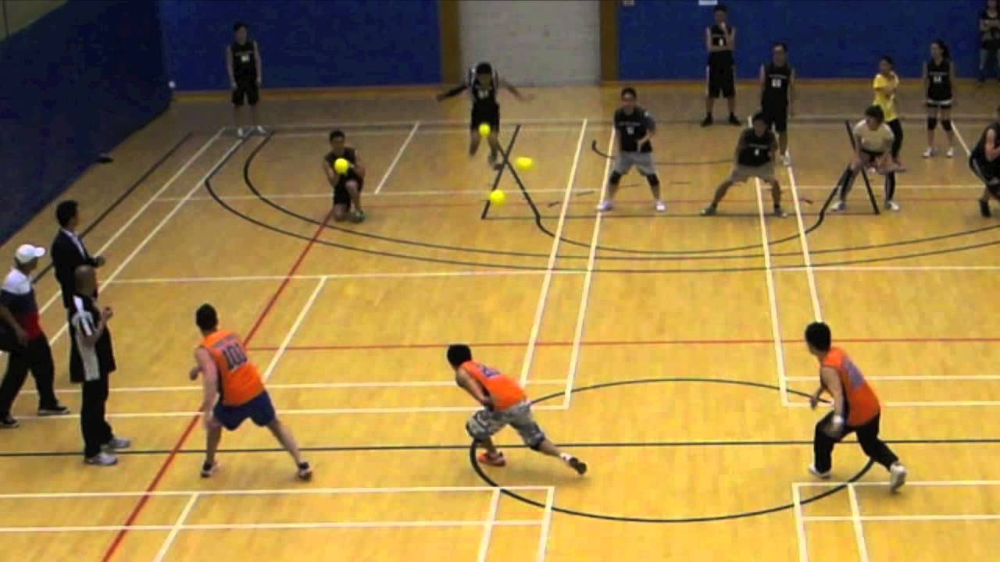

OBJETIVO
El Dodgeball es un deporte colectivo de colaboración-oposición y de cancha dividida en el que se enfrentan dos equipos mixtos de 6 componentes.
El objetivo del juego es eliminar al equipo contrario al completo, golpeándolos con los balones.
HISTORIA
En España tenemos juegos populares muy similares al Dodgeball, que en cada pueblo o en cada barrio se juegan con unas reglas y con unos nombres distintos. Los más conocidos son, el Balón Prisionero, el Balón Tiro, Sangre, Brile…
En todos los casos se juega con un solo balón y el jugador golpeado cambia de zona, o
cementerio. Se pueden introducir varios cementerios, lo cual ayuda cuando se juega sin paredes. En todos los casos existe el concepto de pases entre cementerios y zona de los vivos.
En función de la variante, las capturas al vuelo daban vida al capturador-a o se resucitaba a una jugadora-o. Si uno de los equipos se queda con un solo jugador o jugadora y éste esquiva siete lanzamientos su equipo suma un punto.
TERRENO DE JUEGO MATERIAL
Pista de juego: Campo de Voleibol sin red. 18 X 9 m.
El terreno de juego será rectangular, dividido en dos campos cuadrados con una línea de ataque paralela a 3 m. de la línea central.
Balones de juego: 6 balones de Gomaespuma densa de 20 cm. de diámetro.
REGLAS BÁSICAS WORLD DODGEBALL ASSOCIATION
- Dodgeball es un juego autorregulado, no precise árbitros. Al jugar en torneos, se necesitan 4 árbitras/os, 2 en la línea central y dos en las de ataque. Su función es comenzar el juego, confirmar los impactos, las recepciones y llevar el tiempo de posesión.
- Para comenzar el juego las 6 pelotas se colocan en dos grupos de 3 en los extremos de la línea central. Solo se pueden ir a coger los balones de la derecha.
- Una pelota muerta se activa para poder atacar, regresando con ella a la línea de fondo.
- Estarás eliminada-o en el caso de que:1) te salgas del campo 2) un lanzamiento golpee tu cuerpo, o 3) un oponente coja al vuelo tu lanzamiento.
- Cada lanzamiento solo puede eliminar a un jugador o jugadora. Los balones que golpeen a un participante pero previamente han tocado el suelo, las paredes, a otra jugadora/o u otra pelota; se consideran balones muertos y no pueden eliminar.
- Se puede utilizar una pelota como escudo. Si se te escapa la pelota con la que bloqueas o no eres capaz de hacer un bloqueo limpio (sin tocar con ninguna parte del cuerpo) estás fuera.
- Al eliminarse se puede volver a jugar cuando tu equipo coge una pelota al vuelo. Se vuelve al juego en el orden de eliminación y hay que tocar la línea de fondo para volver al juego.
- Solo se puede mantener un balón en posesión durante 10 segundos. Al superar ese tiempo hay que pasar rodando ese balón al campo del equipo contrario.
- En el caso de quedar una jugadora o jugador en cada equipo, transcurridos 10 segundos se produce un “Showdown”, una muerte súbita, en la que las jugadoras/os empiezan con dos balones en posesión y desde su línea de fondo. La línea central desaparece y ganará el primero en golpear al contrario sin tiempo de posesión.
VARIANTES
Datchball. Es una variante Aragonesa deportivizada, que se ha hecho hueco en las clases de EF de primaria, simplificando la lógica interna del Dodgeball.
La principal modificación viene en el número de balones con los que se juega, 3; en la no activación del balón y en la adaptación a las salas de motricidad más comunes en nuestro país.